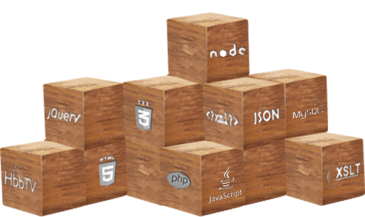

<?php include "inc/_header.php"; ?>

	<section id="technologies">
		<div class="inner">
			<h1>Technologies</h1>
			<div class="line"></div>
			<p><span class="bold">Fusing the capabilities of a large consultancy firm with the flexibility of a start-up environment,</span><br /> the minds behind ubiiqu are fluent in all the requisite technologies to develop, foster and promote strong, scalable digital profiles. Our core technologies include all major programming languages and CMS platforms, with a particular emphasis on integration between web-based media, mobile devices and home entertainment systems. We seek to create products that can be translated into any number of applications, aiming at cross-platform pollination whenever and wherever possible.</p>
			<article id="tech-specs">
				<h3>Our core technologies &amp; </h3><br />
				<h3>specialities include:</h3><br />
				
				<ul>
					<li>Web Programming: HTML5, HbbTV, CSS, JavaScript, jQuery or XSLT</li>
					<li>System Scalability: Node.js, PHP, WebSockets, REST, API building</li>
					<li>CMS Platforms: TYPO3, Drupal, Joomla, Wordpress and Silverstripe CMS platforms</li>
					<li>Multichannel and responsive technologies: TV, mobile, tablet devices, desktops, navigation, game consoles, and more</li>
				</ul>
			</article>
			
		</div>
	</section>

<?php include "inc/_footer.php"; ?>
